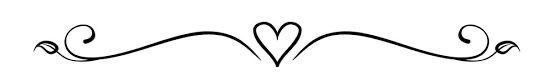

Szóval, hol is kezdjem?
Fél éve együtt vagyunk kicsi, FÉL!!
És az őszintét megvalva,
életem legjobb fél éve. Jó jogos, nem ennyi ideje szeretlek,
deeee amióta ismerlek határozottan jobbá tetted az életemet.
Amióta először megpillantotalak a gólyatáborban (és lefotóztalak persze)
nem is sejtettem volna, hogy ennyit fogsz jelenteni.
A legelső MÁRK! óta oda és vissza vagyok érted, úgy mindenedért.
Olyan pillanatokban voltál velem, mint senki más, jobban ismersz már mint én
magamat, a legkisebb megrezdüléseimnél tudod hogy mizu, és hogyha baj van, akkor mi kell nekem.
Amikor beteg voltam te voltál az első aki megkérdezte hogy vagyok,
ha szomorú voltam pedig hogy hogyan tudnál jobb kedvre deríteni.
De valami még többet adtál nekem. Magadat és az idődet.
Azt az időt, mely csak egyfolytában telik, de te mindig velem beszélsz, hívásozol,
ha úgy van megvársz és a legtöbb szabadidődben is én járok az agyadban.
El sem hiszed hogy ezek mennyit jelentenek nekem. De te mégtöbbet számomra.
Nemtudom elmondani hogy mennyire de mennyire szerencsésnek modhatom magamat
veled. Minden nap elmomdod mennyire szeretsz, de nem is kéne mondanod, hiszen
mindig is érzem. És ez az érzés mindig is itt volt, akkor is itt van
hogyha nem figyelek, mert tudom hogy te nézel, figyelsz és támogatsz.